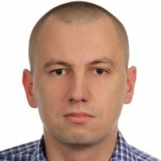

|  | Damian OsowskiMechanical Engineer and Python Enthusiast Self-motivated and always willing to learn, entry-level Python programmer. Determined and organized team player who works calmly under pressure. |
| Python | ⭐⭐⭐ | Docker | ⭐ |
| HTML | ⭐⭐ | SQLite | ⭐ |
| Git | ⭐⭐ | ML/DL | ⭐ |
Planned Career Break – 10/2021 to now
Mechanical Design Engineer - 06/2010 to 10/2021
GE Aviation, Warsaw
FEA Engineer - 11/2006 to 06/2010
FAURECIA R&D Center, Grójec
Master of Science: Mechanics and Machine Design - 2007
The Warsaw University of Technology, The Faculty of Power and Aeronautical Engineering